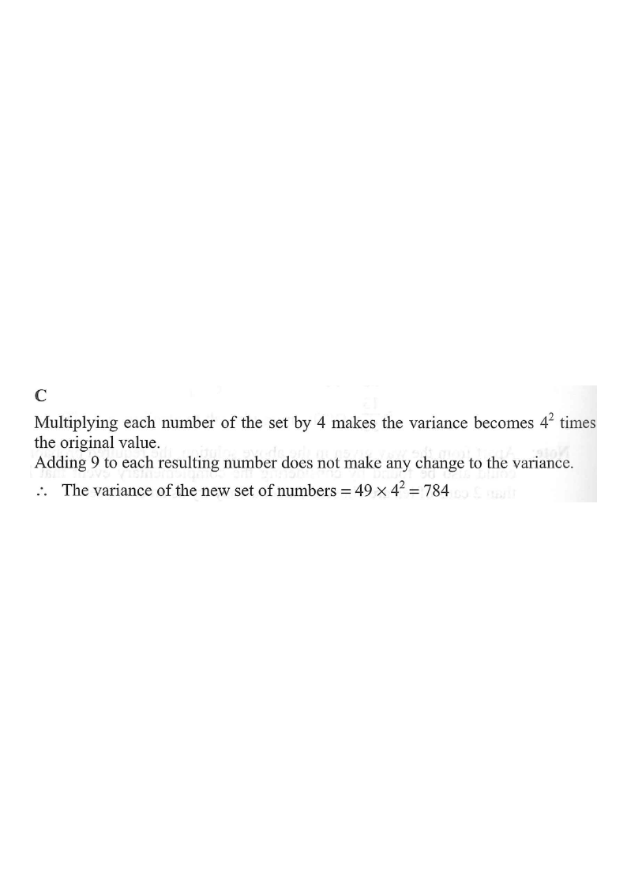

Interactive figure
Step 1 — the original data set with mean μ and variance 49.
The variance of a set of numbers is $49$. Each number of the set is multiplied by $4$ and then $9$ is added to each resulting number to form a new set of numbers. Find the variance of the new set of numbers.

Step-by-step solution
Original set $x_1, x_2, \dots, x_n$ with $$\operatorname{Var}(x) = 49.$$ Every value is transformed by $$y_i = 4x_i + 9.$$
For any constant $k$, $$\operatorname{Var}(kx) = k^{2}\operatorname{Var}(x).$$ Variance is measured in squared units, so the factor $k$ must be squared.
For any constant $c$, $$\operatorname{Var}(x+c)=\operatorname{Var}(x).$$ Adding $9$ shifts every value by the same amount, so the spread is unchanged.
$$\operatorname{Var}(4x+9)=\operatorname{Var}(4x)=4^{2}\operatorname{Var}(x)=16\times 49.$$
Compute: $$16 \times 49 = 784.$$
$49\times 4 = 196$ (A) forgets to square $4$.
$196+9 = 205$ (B) wrongly adds the shift to the variance.
$784+9 = 793$ (D) adds $9$ to a variance, but a shift never changes variance.
Question. The variance of a set of numbers is \(25\). Each number of the set is multiplied by \(3\) and then \(7\) is added to each resulting number to form a new set of numbers. Find the variance of the new set of numbers.
A. \(75\) B. \(225\) C. \(232\) D. \(756\) (1 mark)